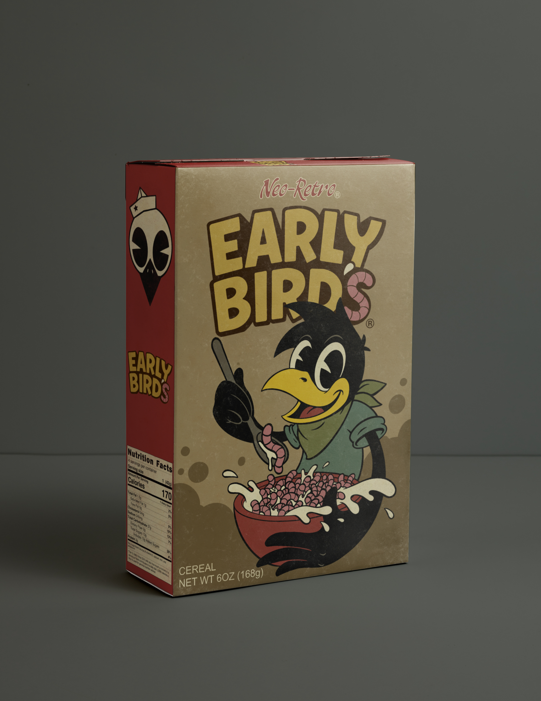

Lotería
Lotería is a traditional Mexican game of chance, often compared to bingo but it’s more colorful, cultural, and storytelling based

Packeging
As a ’90s kid, I grew up surrounded by bold, playful packaging from cereal boxes and toys to the rapidly evolving technology of the era. Those vibrant visuals deeply influenced my artistic voice and shaped my love for graphic, eye catching design. Today, my illustrations build on that nostalgic energy while reimagining it through a modern lens.
